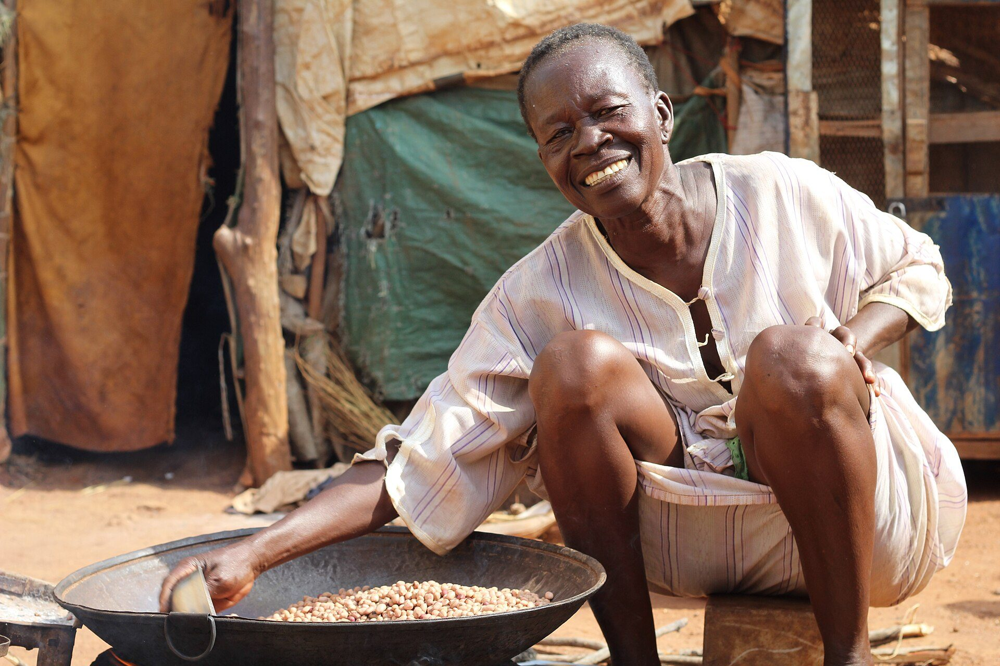
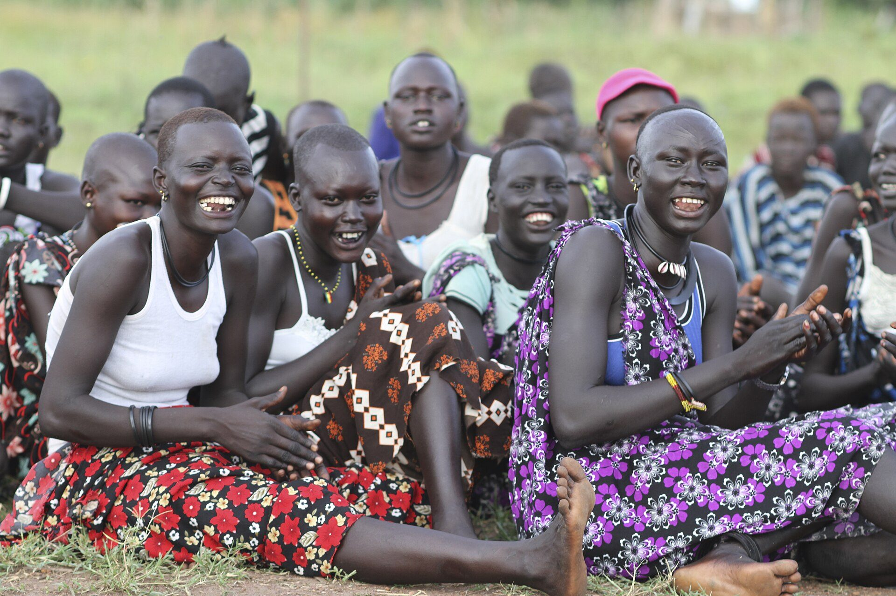
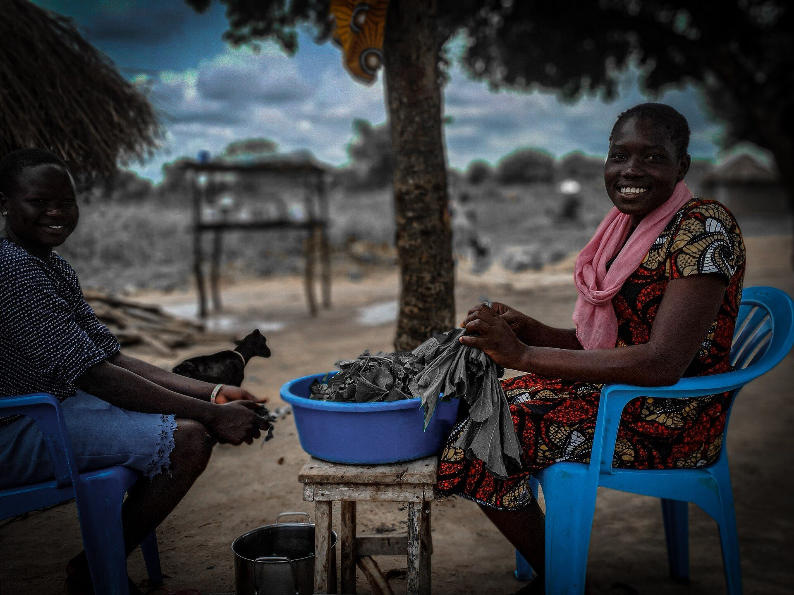
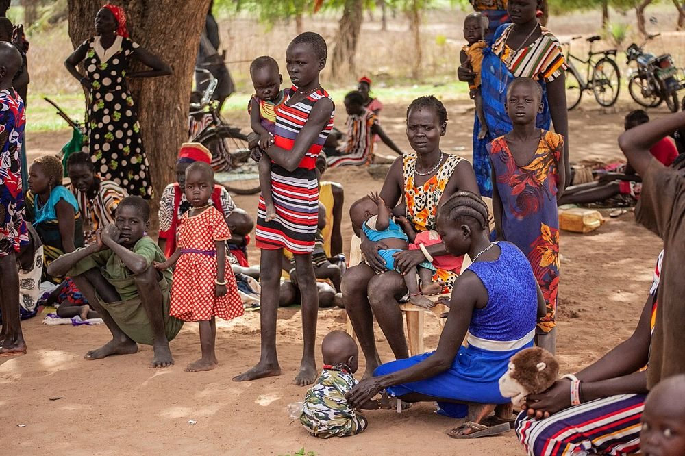
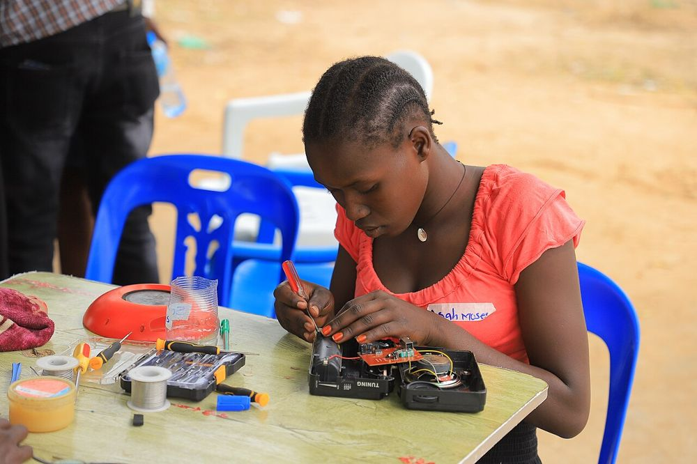
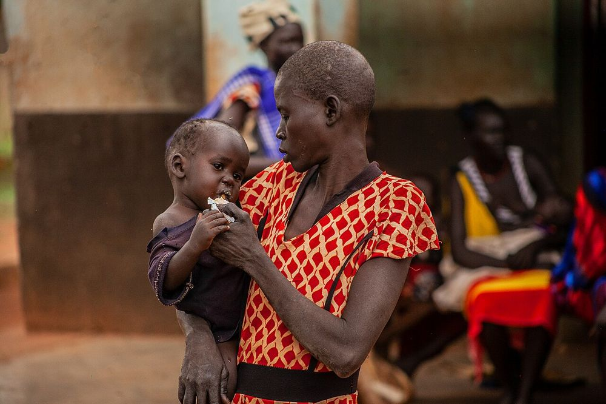

 | South Sudanese woman.jpg | AselMyrza | CC BY-SA 4.0 |
 | South Sudanese Women.jpg | Boniface Mwangi | CC BY-SA 4.0 |
 | South Sudanese family preparing dinner.jpg | Lomoraronald | CC BY-SA 4.0 |
 | Children and women along the river banks 1 in South Sudan.jpg | Lomoraronald | CC BY-SA 4.0 |
 | Women preparing fresh vegatables ready to sell inthe village market in South Sudan.jpg | Lomoraronald | CC BY-SA 4.0 |
 | Market sellers inside UN House IDP camp, Juba, South Sudan (12317200115).jpg | Oxfam East Africa | CC BY 2.0 |
 | Women attend a heath briefing in South Sudan.jpg | Lomoraronald | CC BY-SA 4.0 |
 | Refugees Women in Repair and Recycling of E- waste inclusion in Eden Rhino camp Refugee settlement .2.jpg | See source page | CC BY-SA 4.0 |
 | A mother feeding a child as she waits for treatment at a health facility in South Sudan.jpg | Lomoraronald | CC BY-SA 4.0 |
 | A young girl carrying water from a borehole in South Sudan.jpg | Lomoraronald | CC BY-SA 4.0 |
 | Participants during training.jpg | See source page | CC BY-SA 4.0 |
 | Education for out-of-school children, South Sudan (39018883394).jpg | USAID in Africa | Public domain |
 | Mother with child in the Jamam refugee camp in South Sudan.jpg | DFID – UK Department for International Development | CC BY-SA 2.0 |
 | Women clearing the land in South Sudan.jpg | Lomoraronald | CC BY-SA 4.0 |
 | Secondary school Sudanese students during a break at Supiri Secondary School in Juba, South Sudan. The school is mix boys and girls.jpg | B. Desrus | CC BY-SA 3.0 igo |
 | Merol Market, Bor Town, Jonglei State, South Sudan.jpg | Mr leroy playpus (Tuttle) | CC BY-SA 4.0 |